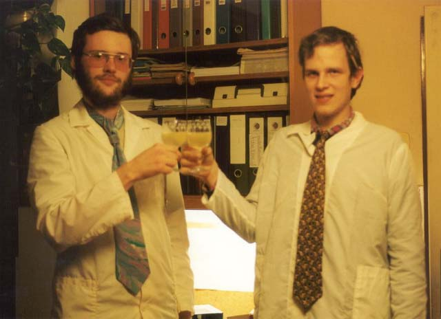

Realtime Radiosity
 2007
2007
News, demos
Authors
 2000,
Radiosita v dynamických scénách
2000,
Radiosita v dynamických scénách
Úvod
Noviny
Výsledky
Publikace
Fotodokumentace
Autoři
2007
2000,
Radiosita v dynamických scénách
Úvod
Noviny
Výsledky
Publikace
Fotodokumentace
Autoři
Při kompozici obrazu záleží mnoho na dobrém rozdělení světel a stínů. Mistrem rozvržení světel a stínů byl slavný holandský malíř XVII. stol. Rembrandt. Také záleží mnoho na správné perspektivě stínu. Stíny zdají se nám býti černé nebo aspoň šedé, avšak ve skutečnosti není tomu tak.Teyssler-Kotyška, Technický slovník naučný

studium referenčních scén

Cornell box

Zrcadlo+točna

přípitek na další výzkum